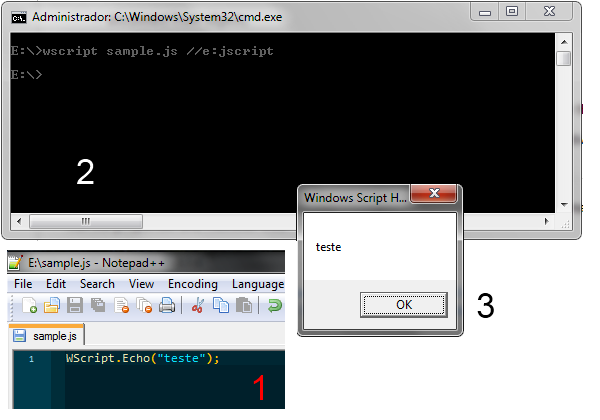
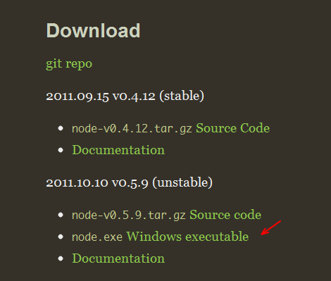
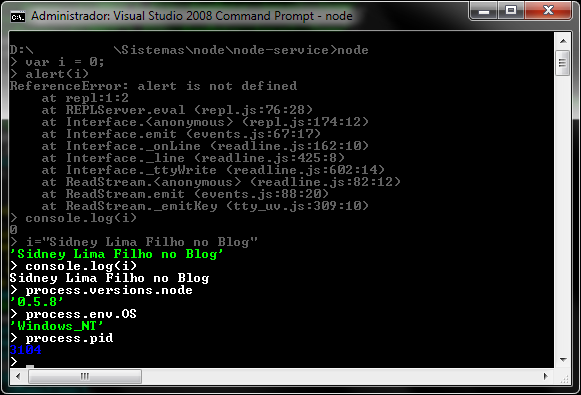
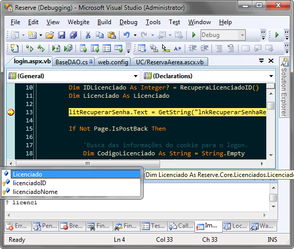
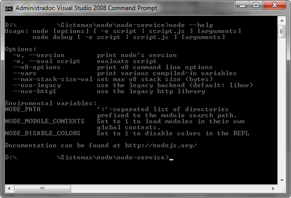

Node.js no Windows
Posted on 2011-05-18 00:00:00 -0300
O que o Javascript é?
Antes de começar a contar uma breve história do Javascript, um ponto a observar é que o Javascript não é uma linguagem puramente da web como muitos imaginam, ela roda localmente como qualquer linguagem script, se você usa Windows no dia-a-dia, assim como eu, noterá que ele esteve sempre ao seu lado e você nem sabia.
Exemplo. Você pode criar um arquivo .js, clicar duas vezes nele que ele executará. Claro, quando se escreve um javascript dessa forma o paradigma de programação é outro. Você não tem window, document, DOM, alert, o JQuery não funciona, nem as coisas de HTML em geral, você passa a ter acesso a funções que normalmente você não usaria como CreateObject, MsgBox, WScript, que por sua vez não funciona nos browsers, mas a linguagem é a mesma, o mesmo FOR, IF, WHILE, EVAL, FUNCTION, etc. Se quiser mais informações de quais opções estão disponíveis para desenvolver em javascript no Windows você pode acessar o site do MSDN

Guia Referencia http://msdn.microsoft.com/en-us/library/9bbdkx3k(v=VS.85).aspx
JScript on Windows http://msdn.microsoft.com/en-us/library/xazzc41b(v=VS.85).aspx
Manipulando Arquivos e Diretorios http://msdn.microsoft.com/en-us/library/ch28h2s7(v=VS.85).aspx
Um Breve Histórico
Agora que você já sabe que Javascript não é uma linguagem só de navegador, já sabe que ela serve para mais coisas inclusive para realizar tarefas no Windows, então vamos a outra aplicabilidade dela, que é o lado server-side, isso mesmo, usar o javascript para processar nossas páginas HTML do lado do servidor.
O javascript no lado servidor não é algo novo, muito menos uma façanha e nem revolucionário como muitos imaginam. A Netscape, empresa que contratou Brendan Eich, para desenvolver uma linguagem para tudo relacionado a Web (note que Web é tanto o lado cliente, com os browsers, como também é o lado servidor) sabia que a Web necessitava de:
- Linguagem dinâmica, pois cada pagina poderia ter estruturas diferentes;
- Fracamente tipada, pois os dados principais na Web são texto e haveria conversão o tempo todo;
- Conversão implícita, pois além do motivo acima, o desenvolvimento deveria ser focado na utilização dos recursos ao invés do conteúdo deles;
- Derivar de uma linguagem conhecida, com o objetivo de facilitar a migração dos desenvolvedores nativos para a programação Web;
- Script, pois cada página tem lógica própria, portanto não faria sentido ter um executável por página do lado servidor e do lado cliente fosse facilmente acoplado as estruturas HTML existentes;
Nesta época, em torno de 1995, a Netscape junto com Brendan Eich, criaram o Livescript que no ano seguinte, com a junção e aprovação da SUN incluindo-a no processo, pois a Netscape queria dar suporte a Java Applets no seu revolucionário Netscape Navigator, passou a se chamar de JavaScript, numa referencia explicita a linguagem que derivou seu estilo de codificação. (Esta referencia nota-se até hoje, na equipe da Mozila, desenvolvendo a nova especificação da evolução da linguagem, várias palavras reservadas do Java vão aparecer no Javascript)
Neste momento a própria Netscape viu que a linguagem era muito interessante e já começava a criar seu próprio servidor web, para rodar seu “LiveScript” que se chamava Netscape Enterprise Server, através do Netscape LiveWire, que rodava SSJS (Server Side Javascript), olha um exemplo de código da época.
A Microsoft em 1997 (ou em 1998, não lembro bem agora) também se interessou pela tecnologia e adotou-a em seus ambientes, porém após uma briga com a SUN, pois usava a marca Java, ela foi judicialmente obrigada a mudar o nome da linguagem Javascript que ela usava, então ou ela continuava a usar uma linguagem chamada Javascript e pagava os royalties ou usava outra linguagem, nesse ínterim ela tentou emplacar um VBScript, sem sucesso e acabou “inventando” uma nova linguagem o JScript, que é praticamente igual ao Javascript, só diferenciou naquilo que um juiz federal entende, ou seja, quase nada.
Não se importando se era Javascript ou JScript, a Microsoft também ofereceu suporte tanto do lado cliente com seu maravilhoso Internet Explorer (sic) e do lado servidor com as poderosas Active Server Pages (essas sim eram realmente eram poderosas).
Se tudo isso já existia, qual a vantagem do Node.JS?
Como você já sabe o principal objetivo do Node.JS é permitir criar aplicações de rede altamente escaláveis, isso signfica que há alguns desafios físicos a serem vencidos, como por exemplo o problema das 10000 conexões simultâneas. Além disso, outra grande vantagem é usar o motor V8, que o pessoal do Google criou para o Javascript (os compiladores e VM’s da época eram lentas e buguentas), para dar uma turbinada na linguagem tornando-a muito mais eficiente e equivalente em performance a linguagens de peso como C#, PHP, Python, Ruby e Java.
Tá mas e o titulo do post?
OK, eu precisava contar um pouco de história para que as coisas, que virão pela frente, façam sentido. Agora vamos ao que interessa. O Node.js foi um projeto que começou no Linux com a galera do mundo open source (novidade?), porem mais uma vez a Microsoft viu e se interessou pelo projeto, assim destacou 2 profissionais para colaborar ativamente a tornar o Node.js rodando no Windows (afinal ela vende Windows e já estava de olho na sua plataform-as-a-service Azure, certo?), ajudou com conhecimento, recursos, acesso a informações privilegiadas e assim removeu-se os acoplamentos ao kernel do Linux, sem perder sua performance que é muito importante, promovendo uma maior adaptabilidade aos usuários Windows.
Com isso existe duas formas de se instalar o Node.js no Windows:
- Baixa o código fonte, descobre que precisa de um emulador POSIX (msys ou cygwin), tenta compilar, descobre que precisa baixar uma parafernália que você não faz idéia para que serve, tenta de novo, a compilação falha pela falta de alguma variável de ambiente, tenta de novo, assim sucessivamente.
- Estilo WIN: Baixa o arquivo executável, clica duas vezes e funciona.
Na primeira opção, uma vez conseguindo, ela te abre mais opções de plugins / ferramentas / frameworks desenvolvidos pela comunidade, mas isso já está mudando, como o NPM que só funciona no estilo UNIX.
Como a maioria das coisas que realmente importam, estão funcionando para os dois modos, então vou começar pela segunda opção e que mais se aproxima da nossa realidade.
Passo-a-Passo
- Acesse o seguinte endereço http://nodejs.org/#download
- Baixe o executável para Windows
- Clique 2x no arquivo node.exe

Não acredito que você me fez ler isso tudo para apenas três passos
Não, esses 3 passos foram apenas para mostrar funcionando, porém para executar arquivos com código javascript e integrar ao ambiente são necessários mais passos, que explicarei mais adiante.
Quando você clica 2x no arquivo node.exe, ele abre um console e coloca um cursor piscando, este console é o REPL (Read-Eval-Print-Loop), ou seja, ele lê o que você escreve, avalia se é um javascript válido, imprime o resultado caso haja e começa tudo de novo, esperando você escrever a próxima instrução. Isso nos permite programar e ver o resultado na tela, semelhante ao que algumas IDE’s fazem, por exemplo, o Visual Studio.


Mas e se quisermos executar um arquivo? Não tem problema entra no console e digita “node exemplo.js”

Tem como eu não depender do console?
Claro, essa é a finalidade do artigo, mas primeiro vamos voltar ao conceito. Se lembra que no começo desse artigo eu falei sobre o paradigma de desenvolvimento local é diferente de desenvolver para web? Então com o Node.js é a mesma coisa, existem keywords que tem no Node.js que não terão no browser, o código é javascript mas os ambientes não são os mesmos. Veja na imagem do REPL que eu escrevi propositalmente um “alert” e ele retornou que era “undefined”, porem escrevi “process.versions.node” e retornou “0.5.8”, já que a palavra “process” é uma variável reservada no Node.js, que declara informações do processo que está em execução.
Então para facilitar o reconhecimento desses arquivos Node.js, eu passo a nomeá-los com a extensão “njs”, isso não é obrigatório, porém mais na frente quando você tiver inúmeros arquivos “js”, não saberá reconhecer facilmente no seu projeto se aquele “common.js” é um arquivo com funções para o browser, ou para suas páginas no servidor, ou são funções matemáticas e de manipulação de string, genéricas que servem para os dois ambientes.
Os arquivos javascript que são usados nos projetos web, usados no HTML e browser eu continuo usando a extensão “js”, até mesmo por causa dos arquivos já existentes, porém a partir deste momento os arquivos que uso através do Node.js eu uso a extensão “njs”.
Com essa convenção criada, fica mais fácil integrar ao ambiente, pois bastará associar esta extensão ao Node.js, que o Windows reconhecerá quando eu clicar 2x no arquivo NJS, ele executará usando o Node.js. Para associar a extensão basta executar no console do windows (CMD), as duas linhas abaixo, prestando a atenção para mudar o caminho do executável para onde você colocou o arquivo original.
REG ADD “HKEY_CURRENT_USER\Software\Classes\joyent.node.js\shell\open\command” /ve /d “c:\node\node.exe %1” /f
REG ADD “HKEY_CURRENT_USER\Software\Classes.njs” /ve /d “joyent.node.js”
Prontinho agora seus scripts executam no Windows perfeitamente.
Em breve, publicarei a segunda parte deste post explicando como usar o Node.js como um servidor web.
 Eu sou Sidney Lima Filho e aqui você saberá sobre quem eu sou e minhas ideias. Abaixo estão
as redes sociais que participo e onde você pode me encontrar.
Eu sou Sidney Lima Filho e aqui você saberá sobre quem eu sou e minhas ideias. Abaixo estão
as redes sociais que participo e onde você pode me encontrar.